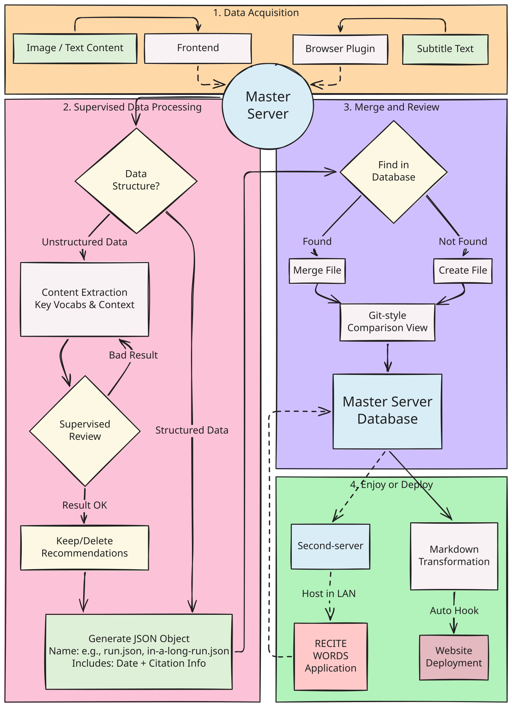

高书捷
Sergio Gao
● 学习中
Education
杭州电子科技大学
学士 · 计算机科学与技术
2024 - 2028
(Expected)
Awards
🥈 ICPC 亚洲区域赛 (上海站) 银奖
Connect
查看我的简历 ↗
Academic Projects & Publications

Link-ual Log ↗
本项目构建了一个集“跨端采集、智能清洗、个性化应用”于一体的全链路学习辅助系统。前端通过基于 Vite 和 React 开发的浏览器插件及局域网图传链路，实现多源异构碎片化语料（如视频字幕、移动端图像）的无缝抓取；中端利用大模型结合人机协同机制，完成非结构化数据的清洗、去重与结构化合并，并自动部署至静态网页；后端则基于沉淀的本地 JSON 私有语料库，开发了定制化的辅助复习智能体，从而打破传统题库限制，为用户提供基于真实历史语境的交互式、个性化复习体验。
LLM 应用开发油猴脚本开发
ReactPython
[Abstract Fig 1]
[Abstract Fig 2]
Learning Progress
10%
10%